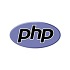

Вот и наступает конец 2024 года. Cкоро 2025 год а это значит что настало сделать итоги популярностей языков программирования.
Я составил топ-25 языков программирования


Есть ещё языки программирования, но они не входят в этот топ
Топ-5 языков программирования
Python всё ещё на первом месте.
C++ с третьего место поднялся на второе.
Java с четвёртого места поднялась на третье место.
C опустился со второго места на четвёртое
C# как и в прошлом году, так и в этом году на пятом месте.
Информация взята из сайта Tiobe.
Как мы видим Python всё ещё остаётся самым популярным языком, из-за своей функциональности, веб-разработка, мобильная разработка, разработка нейросетей т. д. .
Вот такие итоги в этот раз.